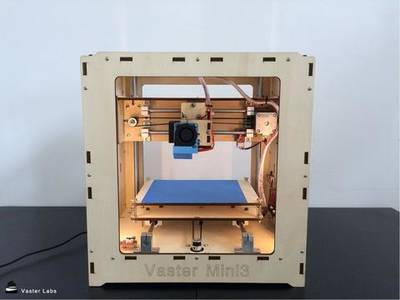
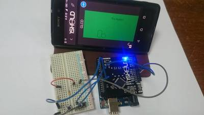

2016-08-25 - Nº 69

Editorial
Esta é a Newsletter Nº 69 que se apresenta com o mesmo formato que as anteriores. Se gostar da Newsletter partilhe-a!
Todas as Newsletters encontram-se indexadas no link.
Esta Newsletter tem os seguintes tópicos:
Esta semana foi anunciada a descoberta de um planeta designado de Proxima b, a orbitar a estrela mais próxima do Sol - Proxima Centauri - com condições favoráveis para ter agua na sua superfície e como tal semelhante à Terra. Foi apresentada uma técnica inovadora para restaurar a fertilidade das mulheres que recorrer a impressão 3D para a criação de uma prótese de ovário para o desenvolvimento dos ovos saudáveis. O Linux faz hoje 25 anos e está de parabéns. Uma equipa do MIT desenvolveu uma rede de roteadores programáveis que se ajustam de forma programável às características do tráfego melhorando assim o seu desempenho. Por fim e para resolver o problema do crescimento exponencial de dispositivos conectados via redes sem Fio, o Laboratório de Ciência da Computação e Inteligência Artificial do MIT apresentou o MegaMIMO 2.0. Este sistema tem a capacidade de transferir informação três vezes mais rapidamente e duplicando o alcance do sinal.
Na Newsletter desta semana apresentamos diversos projetos de maker. Na rubrica "Documentação" apresentamos a revista MagPI de Setembro.
 João Alves ([email protected])
João Alves ([email protected])
O conteúdo da Newsletter encontra-se sob a licença  Creative Commons Attribution-NonCommercial-ShareAlike 4.0 International License.
Creative Commons Attribution-NonCommercial-ShareAlike 4.0 International License.
Novidades da Semana ^
Earth Proxima: Is Our New Neighbor the Most Promising Exoplanet Yet?
"A pale red dot not far from our sun may be orbited by a pale blue dot much different than Earth. In a shocking find, astronomers Wednesday announced their discovery of an Earth-sized planet orbiting the nearest star, Proxima Centauri, just 4.2 light-years away. This warm world, cataloged as Proxima b, sits smack in the middle of its habitable zone the sweetest of sweet spots where liquid surface water could exist. But Proxima Centauri is not like our sun. Its a cool, low-mass star known as a red dwarf. So the planet only qualifies as potentially habitable because it circles its sun in an orbit tighter than Mercurys." [...]
Restoring fertility with 3D printers
"Weve become pretty good at treating certain types of cancerparticularly in kids. Eighty percent of children under 18 are now beating their various malignancies for at least the first five years, compared with less than 10 percent in the 1950s. But female survivors often face a common problem when they grow up: Their harsh cancer treatments have left their ovaries barren. So reproductive biologist Monica Laronda and biomedical engineer Alexandra Rutz of Northwestern University set out to build them new ones. They designed a 3D-printed prosthetic ovary that can grow healthy eggs. Their secret is scaffolding, which is made of 3D-printed gelatin, and holds ovarian follicles that secrete hormones and contain the structures that develop into eggs." [...]
Linus Torvalds Reflects on 25 Years of Linux
"When Linus Torvalds first announced his new operating system, Linux, on Aug. 25, 1991, it was a "completely personal project, Torvalds said at LinuxCon today. The kernel totaled 10,000 lines of code that would only run on the same type of hard disk Torvalds himself used because the geometry of the hard disk was hard-coded into the source code. And, he expected only other students to be interested in studying it as a theory. Those early days were his most memorable, he said, when he was working to solve tough problems and create something out of nothing." [...]

Programmable network routers
"New design should enable much more flexible traffic management, without sacrificing speed. Like all data networks, the networks that connect servers in giant server farms, or servers and workstations in large organizations, are prone to congestion. When network traffic is heavy, packets of data can get backed up at network routers or dropped altogether. Also like all data networks, big private networks have control algorithms for managing network traffic during periods of congestion. But because the routers that direct traffic in a server farm need to be superfast, the control algorithms are hardwired into the routers circuitry. That means that if someone develops a better algorithm, network operators have to wait for a new generation of hardware before they can take advantage of it." [...]
Solving network congestion
"MegaMIMO system from the Computer Science and Artificial Intelligence Lab speeds data transfer by coordinating multiple routers at the same time. There are few things more frustrating than trying to use your phone on a crowded network. With phone usage growing faster than wireless spectrum, were all now fighting over smaller and smaller bits of bandwidth. Spectrum crunch is such a big problem that the White House is getting involved, recently announcing both a $400 million research initiative and a $4 million global competition devoted to the issue. But researchers from MITs Computer Science and Artificial Intelligence Lab (CSAIL) say that they have a possible solution. In a new paper, a team led by professor Dina Katabi demonstrate a system called MegaMIMO 2.0 that can transfer wireless data more than three times faster than existing systems while also doubling the range of the signal." [...]
Outras Noticias
- Microchip Releases Industry’s First End-to-End Security Solution for IoT Devices Connected to Amazon Web Services’ Cloud
- Big Blue Aims For The Sky With Power9
Ciência e Tecnologia ^
The first autonomous, entirely soft robot
"A team of Harvard University researchers with expertise in 3-D printing, mechanical engineering, and microfluidics has demonstrated the first autonomous, untethered, entirely soft robot. This small, 3-D-printed robot nicknamed the octobot could pave the way for a new generation of such machines. Soft robotics could help revolutionize how humans interact with machines. But researchers have struggled to build entirely compliant robots. Electric power and control systems such as batteries and circuit boards are rigid, and until now soft-bodied robots have been either tethered to an off-board system or rigged with hard components." [...]
Down to the Wire: ONR Researchers and New Bacteria
"Scientists sponsored by the Office of Naval Research (ONR) have genetically modified a common soil bacteria to create electrical wires that not only conduct electricity, but are thousands of times thinner than a human hair. As electronic devices increasingly touch all facets of peoples lives, there is growing appetite for technology that is smaller, faster and more mobile and powerful than ever before. Thanks to advances in nanotechnology (manipulating matter on an atomic or molecular scale), industry can manufacture materials only billionths of a meter in thickness." [...]
Scientists Glimpse Inner Workings of Atomically Thin Transistors
"With an eye to the next generation of tech gadgetry, a team of physicists at The University of Texas at Austin has had the first-ever glimpse into what happens inside an atomically thin semiconductor device. In doing so, they discovered that an essential function for computing may be possible within a space so small that its effectively one-dimensional." [...]
McMaster researchers resolve a problem that has been holding back a technological revolution
"Imagine an electronic newspaper that you could roll up and spill your coffee on, even as it updated itself before your eyes. Its an example of the technological revolution that has been waiting to happen, except for one major problem that, until now, scientists have not been able to resolve. Researchers at McMaster University have cleared that obstacle by developing a new way to purify carbon nanotubes the smaller, nimbler semiconductors that are expected to replace silicon within computer chips and a wide array of electronics." [...]
Documentação ^
A documentação é parte essencial do processo de aprendizagem e a Internet além de artigos interessantes de explorar também tem alguma documentação em formato PDF interessante de ler. Todos os links aqui apresentados são para conteúdo disponibilizado livremente pelo editor do livro.
The MagPi 49
"Raspberry Pi beginners guide. Get up and running for the first time with the worlds most famous credit card-sized computer..." [...]
Modelos 3D ^
Com a disponibilidade de ferramentas que permitem dar azo a nossa imaginação na criação de peças 3D e espaços como o thingiverse para as publicar, esta rubrica apresenta alguns modelos selecionados que poderão ser úteis.
Parametric Button Generator - Metric Edition
"Parametric Button Generator with lots of options. This edition features metric measurements for button diameter measured in milimeters. If you prefer ligne measurements for button diameter, head over to http://www.thingiverse.com/thing:1729284 for the ligne edition." [...]
Sphere in cube
"Inspired by https://www.thingiverse.com/thing:209132 I wanted to make a sphere in a cube. But it is a bit hard to print so I made some adjustments to make it easier to print. I've had success printing up to 50% scale, 0.4 layer height, PLA and about 40% infill (to avoid the sides of the sphere to curl up on the bottom)." [...]
Motor wire clamps
"These are some nice wire clamps that will allow you to hang your motor wires up using a single zip tie. The zip ties in conjunction with the clamp keep the wires from becoming pinched or obscured." [...]
Projetos Maker ^
Diversos Projetos interessantes.

How to Build Your Own Discrete 4-Bit ALU
"Believe it or not, computers existed before microcontrollers and CPUs were around. They used to be built using discrete parts including simple ICs and transistors. CPUs are arguably the center of modern electronics, whether it be a mobile device or a control circuit for a factory. With so many types of CPUs on the market (RISC, CISC, etc.), it can be difficultif not impossibleto keep up. But how do CPUs work? What goes on inside? In this project, we will look at the mathematical core of a CPUthe ALU. Then we'll build one!" [...]
Robot Minion - Plant Watering Robot
"This is a Ardunio based robot that tells you with audible voice if your plant needs a water. You just turn it on, stick him in a dry pot and you should do as the robot tells you. First it will ask to pour water on plant. Then it will learn what is a good moisture for a plant and after that it will start to monitor your plant's moisture levels. But it will not waste energy by speaking when nobody is around, instead it will speak only if someone is going by it. It detects if someone is in a near proximity by it's infrared motion sensing eye. Finally it uses rechargeable battery that you can charge via micro usb cable. It will also tell you when it needs to be charged and when it has full battery. Whole robot is encased in custom 3D printed shell that is painted to resemble a minion." [...]
Foam RC Airboat Build DIY
"With a sheet of inexpensive foam, glue, tape and a power system, you can build this electric powered radio controlled airboat. This is a lot of fun because you can drive it everywhere! Asphalt, sand, water, grass or even gravle, and with a powerful power system the airboat can reach very high speeds. The total cost of this project is estimated to be approximately 150$." [...]
Cardboard remote controlled car.
"Wire controlled toys use to be the thing back before radio controlled ones became so common. Growing up I had several different types of wire controlled toys ranging from cars to planes, even a dude on a skateboard. My goal here was to make one out of the most basic of materials using as few parts as possible. Let's get started shall we." [...]
ESP8266 USB Software Driver
"I wanted to have USB on the ESP8266, and a while ago I saw on the ESP32 flier, it read: "Rich Peripherals" ... "Sorry, no USB!" I thought to myself, that is ridiculous. Of course there's USB. So, it was born. This is a software USB stack running on the ESP8266/ESP8285. It requires only one external resistor, between D- and 3.3V. Currently, the chip expects D- on GPIO 4 and D+ on GPIO 5 - but any GPIO pair may be used. It is important to note that both D- and D+ MUST be adjacent." [...]

Building a 3D Printer Under 299$
"It's a low cost, full-featured 3D Printer, and the most important thing is, you don't need any 3Dprinted parts to build the 3D Printer. If I have a 3D printer,I don't have to look around how to build a 3D Printer..." [...]
SF Muni LED Sign at Home with Raspberry Pi
"My android phone wakes me up with its stock alarm clock into a cold San Francisco summer morning. I lie around a bit, but eventually get up to enjoy yet another day. An hour later, I'm running in my dress shoes, tie waving in the wind like that of an anime superhero schoolboy, towards a light rail train stop. Twenty seconds before I get there, the train leaves, right before an unanticipated 20-minute break in the service. I eat a bagel I don't want in a cafe nearby to sit there and work while waiting; my day, having barely started, is already ruined. Could I have made it? Of course, I could. I could have not re-tied my tie in order to drape it half inch shorter; I could have not procrastinated on reddit for five minutes while sipping tea, I could have postponed paying my bill to the evening. On the other hand, I don't want to finish too early and wait at home instead of in a cafe. I need something to let me know, at all times, when the next train is." [...]
Automated Plant Watering System
"Going away from a while? Need something to babysit your house plants? This box will automatically deliver an adjustable volume of water to four plants (or less) every day, or once every "x" day (up to seven days). A micro controller handles the time tracking and 120AC switching (via a relay). The relay powers a fountain pump which functions as the water delivery system." [...]
WiFi Plant Watering ESP8266
"So I was always forgetting to water my plants, and as a result they would get dry and sometimes even die. So I though it would be cool to be able to water my plants with my phone. Its connected to the internet via the ESP-01 module and can be used to water your plants or animals once a day for the duration of time you choose. The User Interface also allows you to water manually with the push of a button, and from anywhere in the world." [...]
Peltier Fermentation Chamber for Beer
"Most homebrewers know the importance of controlling the fermentation of their beer. I initially used fridges, but fridges only cool the beer down. What if you need a chamber that can both heat and cool? Enter the peltier! Peltier modules get hot on one side and cold on the other when voltage is applied to them. If you reverse the polarity of the voltage, the hot and cold sides on the peltier are switched. Peltiers are the heart of this project." [...]
Program an Arduino with State Machines in 5 Minutes
"Did you ever program an Arduino? Have you ever been worried about complex control flows written in pure C? Maybe you have already heard of statecharts and state machines? In this blog post, I will show you how to program an Arduino in just 5 minutes in a model-driven way with the help of YAKINDU Statechart Tools (SCT)." [...]
RFM69 WIFI Gateway
"Some 3 years ago I started building my own wireless sensor network at home. The technology I used at the moment has proven to be the right choice, mostly because it is flexible and modular. MQTT is the keystone of the network. The publisher-subscriber pattern gives the flexibility to work on small, replaceable, simple components that can be attached or detached from the network at any moment. Over this time is has gone through some changes, like switching from a series of python daemons to Node-RED to manage persistence, notifications and reporting to several cloud services." [...]
Simple Pump Controller and Circuit
"A recent project at work required that I drain water from two tanks periodically. Since both of the tank drains are located below the level of all the drains in the room, I would fill up buckets and transfer the water to the drains manually. Soon I realized that I could simply put a pump in the bucket to automatically pump the water to the drain whenever the tanks were drained. This is the story of how my brother and I accomplished this task." [...]
Twitter Mood Lamps with ESP8266
"One day I was browsing through Thingverse and came across these awesome looking lamps made by Markellov.I decided I wanted to make something out of them and settled on a Twitter Mood Lamp. The idea was to parse tweets and assert the general mood of the tweets which then gets translated to a color displayed by the lamp. I looked around and found this Instructable. However , it was quite outdated and the REST request to Twitter doesn't quite work the same way anymore. So I decided to create my own version." [...]
9V Mini Drill
"This 9V powered drill is perfect for wood, PCB boards, bakelite, cardboards and many more. Very simple to make, a perfect utility tool for DIY hobbyists." [...]
HAL-CAM 9001 Building a New Security Camera
"Traditional security camera solutions are very good at detecting movement however these solutions are unaware about what that movement actually is. They cannot automatically tell the difference between trees moving in the air, or a car or a human. We wanted to have a system that could identify humans and record such information; this would allow it to discriminate between uninteresting activity (such as a car driving past a road) and more interesting activity such as the presence of a stranger. Thus the HAL-CAM 9001 was born. The camera doesnt just output a video file; it also outputs a text file or table that contains time-stamps to indicate exactly when a human was spotted. Others may wish to identify other things such as (say) a cat. The idea is to have a searchable and readable text file that a user can quickly browse for any interesting activity." [...]
PWM Solenoid and Valve Driver using DRV103
"Tiny module is a PWM Solenoids and Valves driver using Texas instruments DRV103 low-side DMOS power switch employing a pulse-width modulated (PWM) output. Its rugged design is optimized for driving electromechanical devices such as valves, solenoids, relays, actuators, motors and positioners. This board is also ideal for driving thermal devices such as heaters, coolers, lamps, PWM operation conserves power and reduces heat rise, resulting in higher reliability. In addition, adjustable PWM allows fine control of power delivered to the load. Output delay time and oscillator frequency are also externally adjustable." [...]
Simple DIY Dual Pulse Spot Welder with Arduino Controller and Screen (microwave transformer based)
"So you want to build your own spot welder? I did too! I found lots of good how-tos out there, but most of them require hard to find parts, custom PCBs, or some other such barriers to entry. So I decided to take the principles that I learned from reading all those how-tos and make my own version of them. I tried to make this spot welder as simple yet robust as possible." [...]
Monitor your Muscle Power on LCD
"While I was practicing in gym earlier this month I wondered if I can numerically monitor my muscle performance so I can measure how much I improve every session. I usually lift different amounts of weight with no specific pattern I thought it would help me find the most efficient pattern that benefits my muscles the most. So I Imagined what if I can put an LCD right in front of me while I am performing in gym that prints muscle power in Watts instantly. By insirting the weight I am lifting on an ANDROID Application called "1Sheeld" which in turn access Accelerometer sensor on my phone and sends these data to Arduino that will measure muscle power and print it on LCD .Simple isn't it ??!!" [...]
How to Make Mini CNC 2D Plotter Using Scrap DVD Drive, L293d Motor Shield & Arduino
"this a mini CNC 2D plotter made from old DVD drive and L293D motor shield very cheap but intresting" [...]
Arduino Waveform Generator
"Waveform generators (also called function generators) are useful for testing and debugging circuits. I often use them to test the frequency response of electronics components like op amp and sensors. This waveform generator is powered by an Arduino. It outputs four waveshapes: sine, triangle, pulse, and saw, each waveshape ranges in frequency from 1Hz-50kHz. The frequency, pulse width, and overall amplitude (gain) of the waveforms is controlled by three potentiometers. I've also included (optional) indicator LEDs that let you know which type of wave is currently being sent to the output." [...]
Arduino Color Sorter Project
"In this article I will show you how you can make an Arduino Color Sorter. You can watch the following video or read the written article below." [...]

Robot tea
"Hi, this is is a robot tea, it can make a perfect tea while you can doing something else, let's see how you can make one from cheap." [...]
ATtiny Nametag
"This tutorial will show you how to make a 3D printed microcontrolled LED nametag with Electrifi 3D Printer Filament. Adding the ATtiny85 microcontroller gives you the ability to get a variety of different lighting effects, as well as turn the name tag off at the push of a button." [...]
How to build the ultimate bicycle safety light system
"This project started off innocently enough; I just wanted to add one permanent light to my bicycle for when I ride at night. The idea snowballed from there and I now have a super fancy bicycle safety light system using an Arduino strobe controller shield, which I designed just for this purpose." [...]

Make your own LED illuminated laser cut box
"For a long time I had an idea to make a beautiful box with complex LED illumination, but after a long search I failed to find such projects, even the code was not there. Because of those reasons I decided to make an instructable for everyone who wants to make their own boxes with custom illuminated images. In this instructable I will explain step by step on how I made my own box and also I will try to give advices and ideas on how you can customise everything. As it is my first instructable, expect errors, but in time and I hope with your help I will try to improve and correct any flaws." [...]
Temperature Sensing and Monitoring Using Arduino and Esp8266
"This instructable is based on the concept of IoT. This project is going to give the real time temperature of any place. I used the Arduino Uno, lm35 temperature sensor and esp8266 wifi module. Then I am going to send that temperature to the Thingspeak.com." [...]

Simple Graphical Game With Arduino and OneSheeld
"I don't know much Java or Android , so I tried to make a simple game with the Arduino C I know, and I found that it's possible using 1Sheeld , moreover it is not just a software game, i added push buttons to make it easier and more fun to control. This game is a rectangle figure that jumps when one of the buttons is pressed, and gets down (doesn't complete the jump ) when the other button is pressed . I added a rounded obstacle, which when the figure hits, the graphical screen will display "Try again " and the figure will go back to the start point." [...]
3D Printer Part Recycling Grinder
"I was getting tired of cutting up failed parts and my research materials by hand. So I decided I wanted a part grinder to compliment my Filastruder. There are a few options for grinding up failed printed parts for turning them back into filament. I didn't want to spend $500+ dollars and also wanted something that was more effective than the other low cost DIY solutions I've seen. I don't have access to a machine shop anymore so I had to make something in my garage with somewhat basic hand tools. The design is based around this tooling restriction. It is smaller than I would have liked and took about 40hours to build." [...]
Opto-Isolated Laser Controller Build
"I just finished building a device to interface a modern fiber-coupled DPSS laser used for optogenetic experiments with 15 year old scientific hardware. I finished this project in one afternoon, and Im very happy with how it came out! This project has a blend of analog and digital circuitry, microcontrollers, and lasers (all the fun stuff!) and turned out to be a pretty cool build, so Im sharing the design and construction with the hope that it will be inspiring to someone else." [...]
Random LED Dots: Entropy Library for Moah Speed with Less Gimcrackery
"A discussion over the Squidwrench Operating Table about injecting entropy into VMs before / during their boot sequence reminded me that I wanted to try the Entropy library with my 88 RGB LED matrix. The original version trundled along with random numbers produced by timing Geiger counter ticks. The second version, digitizing the amplified noise from a reverse-biased PN junction, ran much faster. Whats new & different: the Entropy library measures the jitter between the ATmega328 watchdog timers RC oscillator and the ceramic resonator (on Pro Mini boards) driving the CPU. It cranks out four bytes of uncorrelated bits every half-second, which isnt quite fast enough for a sparkly display, but re-seeding the Arduino PRNG whenever enough entropy arrives works well enough. One could, of course, re-seed the PRNG with Geiger bits or junction noise to the same effect. The key advantage of the Entropy library: no external hardware required. The downside: no external hardware required, so, minus those techie transistors / resistors / op amps, it will look like Just Another Arduino Project." [...]
Raspberry Pi playing ZomBuster
"Some time ago I had a course dealing with image analysis i.e. image segmentation, moments, colour detection, object recognition etc. As part of the course everyone had to make a project that showcased the theory we had been learning throughout the course. We were allowed to use OpenCV as the backbone for accessing the camera etc, but not allowed to use any of the built-in filters. Instead the goal was to implement the different algorithms ourself." [...]
OBD II Information Logger and Diagnostics Reader
"Reads and logs information from a vehicles ECU Raspberry Pi and an ELM 327 USB to OBDII cable." [...]
That's all Folks!